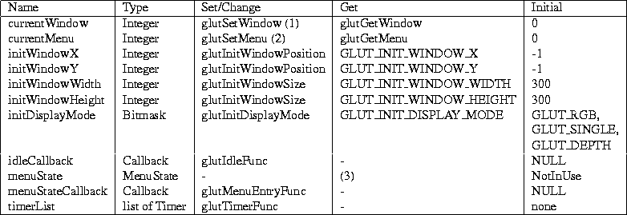

Next: A.2.2 Fixed System Dependent Up: A.2 Global State Previous: A.2 Global State

-
- (1) The currentWindow is also changed implicitly by every window or menu callback (to the window
triggering the callback) and the creation of a window (to the window being
created).
-
- (2) The currentMenu is also changed implicitly by every menu callback (to the menu triggering
the callback) and the creation of a menu (to the menu being created).
-
- (3) The menu state callback is triggered when the menuState changes.
Next: A.2.2 Fixed System Dependent Up: A.2 Global State Previous: A.2 Global State
Mark Kilgard
Fri Feb 23 08:05:02 PST 1996